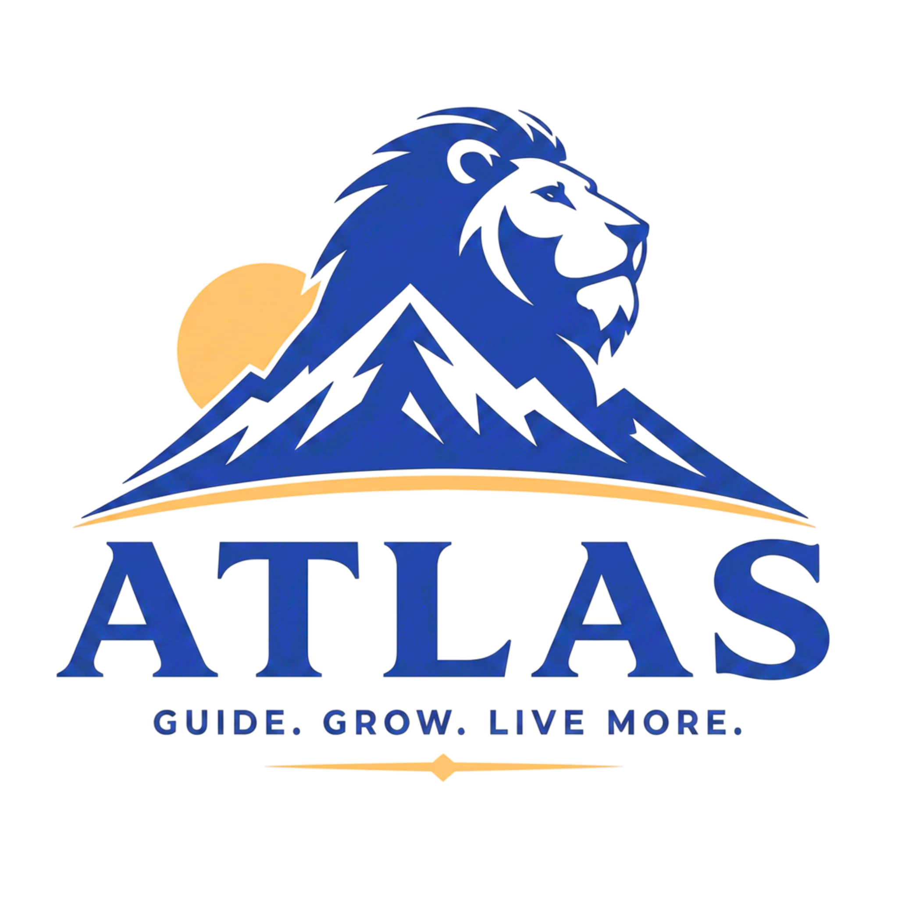
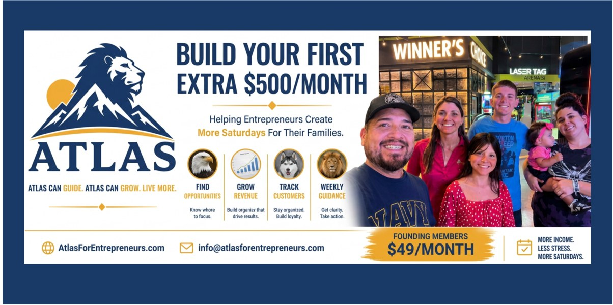
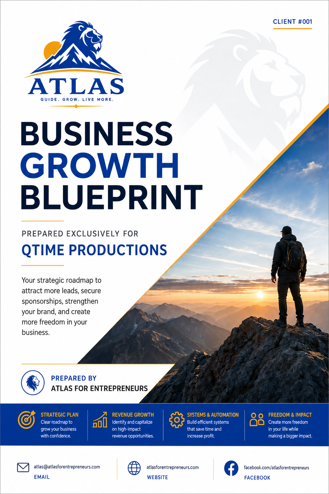
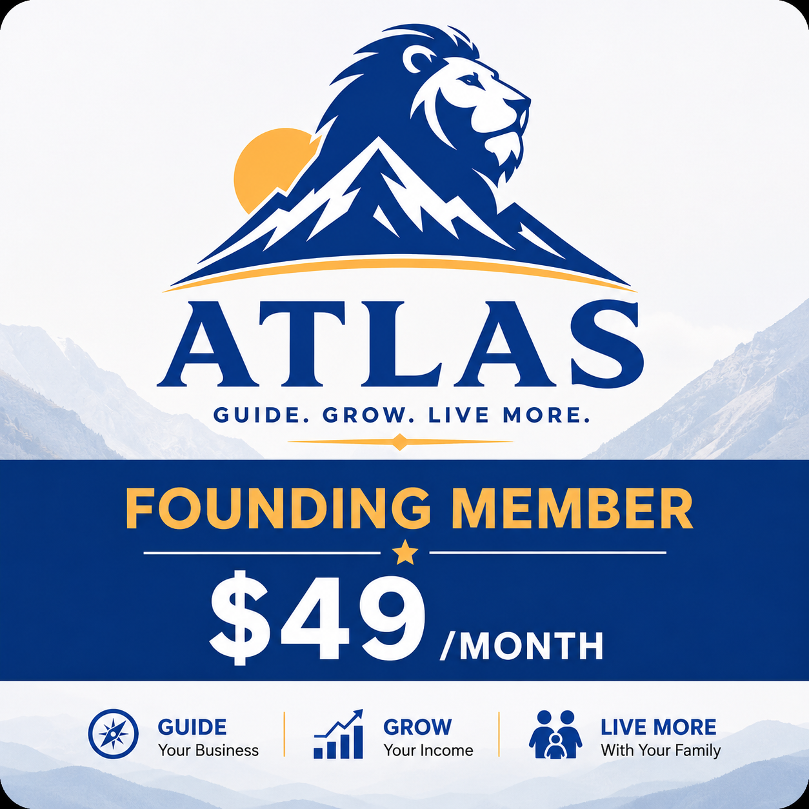

Clarity before work
Atlas starts by understanding the business before recommending websites, campaigns, dashboards, or automations.

Atlas For EntrepreneursExecutive support for entrepreneurs
Atlas is an Executive Business Operating System built to help entrepreneurs find the next right move, delegate smarter, and turn a Business Assessment into a practical growth plan.

Atlas converts owner insight into growth priorities, executive recommendations, and follow-up systems.
What Atlas Is
Most entrepreneurs do not fail because they lack effort. They fail because too many decisions, customers, ideas, and follow-ups live in one tired brain.
Atlas helps turn scattered business information into a focused operating rhythm: assess, prioritize, build, follow up, measure, and improve.
Take the assessment first →The Atlas Promise
The website has one job: help the right entrepreneur trust Atlas enough to complete the Business Assessment.
Atlas starts by understanding the business before recommending websites, campaigns, dashboards, or automations.
Priorities favor customer commitments, visibility, follow-up, pricing, and the next best path to income.
The goal is repeatable progress: workflows, customer tracking, marketing assets, and a clear weekly focus.
Meet Your Founding Executive Team
Business strategy, executive planning, delegation, accountability, Business Growth Blueprints, and overall coordination.
Revenue opportunities, market research, competitive intelligence, business expansion, and new income ideas.
Website creation, branding, campaigns, social media, content creation, and creative assets.
CRM, customer automation, lead management, follow-up systems, communication, and business workflows.
How Atlas Works
Atlas uses your answers to understand where the business is, what is blocking growth, and which executive function should act first.
Complete the Business Assessment so Atlas can see the real business context.
Receive a growth blueprint with opportunities, risks, priorities, and next actions.
Atlas helps create the assets and systems that support the plan: marketing, website, CRM, dashboards, and campaigns.
Weekly guidance keeps the entrepreneur focused on the highest-value next move.
Show, Don't Just Tell
See a Sample Business Growth Blueprint
This sample presentation shows the practical output Atlas can create from an assessment: business snapshot, digital presence review, opportunities, and priority action steps.

View Presentation PDFWhat prospects can inspect
The goal is to let prospects see the kind of thinking Atlas brings before they become clients. This creates trust, reduces uncertainty, and makes the Business Assessment feel worth completing.
Client Platform V1
The client platform shows how Atlas can turn an assessment into a focused operating view: sign-in, dashboard, blueprint access, file area, current tasks, completed work, and next-step guidance.
Client dashboards are intended for approved client access only. Private client files should stay off the public website unless proper server-side security is in place.
Current Priority: Highest-value next action
Owner Focus: Save time, follow up, and grow revenue
Atlas Guidance: “What should I work on first?”
Founding Member Offer
The assessment is the trust-building step. The monthly offer is positioned after Atlas proves it understands the business and can create practical next actions.

Founding Members
Limited to the first 10 Founding Members.
Secure payment opens in PayPal using the approved Atlas payment link.
FAQ
No. Atlas is positioned as an executive operating system: assessment, strategy, delegation, deliverables, systems, and accountability.
Entrepreneurs, local businesses, creators, and owners who need clearer priorities, better follow-up, and practical growth assets.
You complete the Business Assessment. Atlas uses those answers to identify the next best opportunities and recommended support.
Atlas shows its work through tangible deliverables, transparent priorities, and a sample Business Growth Blueprint shared with client permission.
Ready?
Start with the free Business Assessment so Atlas can understand your business before recommending work, tools, or campaigns.